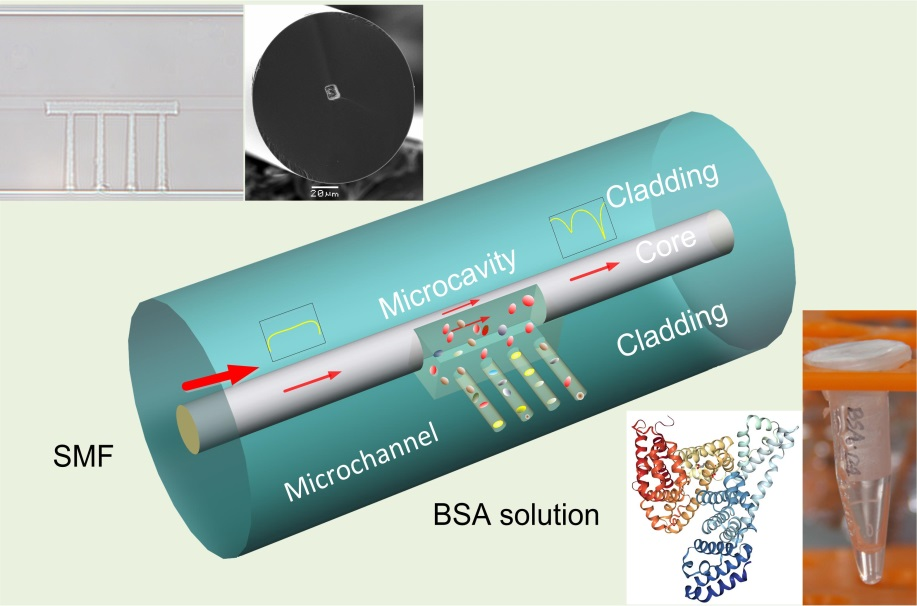

光子器件微纳制备技术是借助激光加工、电弧热效应、机械加工等多种精细加工手段对光纤表面或者内部结构进行微米甚至次微米尺寸的精细加工，目的是获得新型光纤光子传感器。实验室已自主设计并搭建了飞秒激光微加工系统、CO2激光微加工系统、微纳光纤拉锥系统、电弧加工系统和光纤研磨系统。本研究方向的具体研究内容包括：
实验室主要开展光纤传感技术及应用研究，重点研究光子器件微纳制备技术、光纤微结构传感技术、光纤新材料传感技术的机理、方法及应用，尤其是在生物化学传感领域的应用。包括三个主要研究方向：
光子器件微纳制备技术是借助激光加工、电弧热效应、机械加工等多种精细加工手段对光纤表面或者内部结构进行微米甚至次微米尺寸的精细加工，目的是获得新型光纤光子传感器。实验室已自主设计并搭建了飞秒激光微加工系统、CO2激光微加工系统、微纳光纤拉锥系统、电弧加工系统和光纤研磨系统。本研究方向的具体研究内容包括：
光纤微结构传感技术是通过在光纤内引入周期性折射率调制、微结构通道、或者利用微结构光纤中天然的微流道等，研发新型光纤光子传感器，光纤微结构的引入一方面能对光信号进行灵活调制，同时能有效增强光与物质的相互作用，提升传感灵敏度。本研究方向的具体研究内容包括：
光纤新材料传感技术是在光纤表面或内部通过热蒸镀、溅射、化学镀及分子自组装技术淀积不同的功能薄膜、或利用化学合成法生长纳米颗粒和纳米线，扩展光纤传感器在环境监测、食品安全、药物筛查、生物学及生物医学等领域的应用。本研究方向的具体研究内容包括：
本实验室已立项校外科研项目57项，其中国家级项目15项、省部级项目9项、市级项目22项、中国博士后基金10项。
| 序号 | 项目类别 | 项目名称/编号 | 起止时间 | 职责 |
|---|---|---|---|---|
| 1 | 国家杰出青年科学基金 | 光纤传感技术(61425007) | 2015-2019 | 王义平 |
| 2 | 国家自然科学基金重点项目 | 面向微流传感的光子带隙光纤关键技术及器件(61635007) | 2017-2021 | 王义平 |
| 3 | 国家自然科学基金面上项目 | 基于Kagome结构光子晶体光纤的微孔型光栅谐振耦合与敏感机理研究(61675137) | 2017-2020 | 王英 |
| 4 | 国家自然科学基金面上项目 | 飞秒激光湿法刻蚀技术制备光纤微流传感器(61575128) | 2016-2019 | 廖常锐 |
| 5 | 国家自然科学基金面上项目 | 空气芯光子带隙光纤光栅 (61377090) | 2014-2017 | 王义平 |
| 6 | 国家自然科学基金面上项目 | 光子晶体光纤导光机理可逆转换及应用 (11174064) | 2012-2015 | 王义平 |
| 7 | 国家自然科学基金青年项目 | 基于微纳光纤布拉格光栅的光开关研究 (61308027) | 2013-2015 | 廖常锐 |
| 8 | 国家自然科学基金青年项目 | 基于双芯光纤定向耦合的双参数传感技术 (61405128) | 2015-2017 | 尹国路 |
| 9 | 国家自然科学基金青年项目 | 基于光纤微泡结构的LSPR线宽压缩方法研究 (61405127) | 2015-2017 | 王冠军 |
| 10 | 国家自然科学基金青年项目 | 基于悬挂芯光纤微单元的矢量加速度传感器 研究 (61405125) |
2015-2017 | 汪超 |
| 11 | 国家自然科学基金青年项目 | 超长光纤布拉格光栅及分布式传感应用(61505120) | 2016-2018 | 何俊 |
| 12 | 国家自然科学基金青年项目 | 快速电光调谐光子晶体光纤光栅研究(61505119) | 2016-2018 | 孙兵 |
| 13 | 国家自然科学基金青年项目 | 手征光纤光栅轨道角动量模式耦合特性研究(61605129) | 2017-2019 | 白志勇 |
| 14 | 国家自然科学基金青年项目 | 矩形薄板单模光纤研磨制备及其电光 调制与传感器件研究(61605123) | 2017-2019 | 李明全 |
| 15 | 国家自然科学基金青年项目 | 金填充微结构光纤探针器件制备及生化传感应用(61705138) | 2018-2020 | 张峰 |
| 16 | 教育部香港与内地高校师生 交流计划项目 |
光传感方向、技术及应用的多学科合作研究 | 2015-2015 | 王义平 |
| 17 | 广东省粤港协同创新平台组建项目 | 广东省光纤传感技术粤港联合研究中心 (2014B050504010) (深圳大学、香港理工大学) |
2015-2017 | 王义平 |
| 18 | 广东省重大科技专项 | 物联网光纤传感核心器件 — 光纤光栅大规模集成技术及产业化应用 (2015B010105007) |
2015-2018 | 王义平 |
| 19 | 广东省自然科学基金重大基础研究培育项目 | 飞秒激光高效并行微加工技术(2014A030308007) | 2014-2017 | 王义平 |
| 20 | 广东省珠江学者专项 | 光子晶体光纤光栅制作及传感通信应用(829-000001) | 2013-2015 | 王义平 |
| 21 | 广东省科技发展专项(工业高新技术领域) | 面向智能结构的超长光纤光栅传感器(2017A010102015) | 2017-2018 | 何俊 |
| 22 | 广东省自然科学基金自由申请项目 | 超快激光高效制备光纤光栅技术及其在氢气检测中的应用(2015A030313541) | 2015-2018 | 廖常锐 |
| 23 | 广东省自然科学基金博士启动项目 | 基于Bi/Er共掺分布反馈光纤激光器的超宽带多波长激光光源(2015A030310243) | 2015-2018 | 何俊 |
| 24 | 广东省自然科学基金博士启动项目 | 选择性金填充的光子晶体光纤探针式传感器 | 2017-2020 | 张峰 |
| 25 | 广东省教育厅特色创新类项目 | 强调制型光子晶体光纤光栅的制备与传感应用研究(2015KTSCX119) | 2016-2017 | 王英 |
| 26 | 深圳市战略性新兴 产业发展专项项目 | 深圳市光学材料飞秒激光制备技术工程实验室 | 2017-2019 | 王义平 |
| 27 | 深圳市重点实验室组建项目 | 深圳物联网光子器件与传感系统重点实验室(ZDSYS20140430164957664) | 2014-2016 | 王义平 |
| 28 | 南山区重点实验室组建项目 | 南山区物联网光子传感器件与系统重点实验室(KC2014ZDZJ0008A) | 2014-2015 | 王义平 |
| 29 | 深圳市科技计划学科布局项目 | 面向航空发动机的高温高压传感器研究(JCYJ20170412105604705) | 2018-2020 | 王义平 |
| 30 | 深圳市科技计划学科布局项目 | 微创颅内压光纤实时监测技术研究(JCYJ20160427104925452) | 2017-2019 | 王义平 |
| 31 | 深圳市国际合作项目 | 超宽带波长可调谐光纤激光器(GJHZ20150313093755757)(深圳大学和澳大利亚新南威尔士大学) | 2015-2017 | 王义平 |
| 32 | 深圳市海外高层次人才孔雀计划项目 | 液体填充的光子晶体光纤及传感和通信应用(KQCX20120815161444632) | 2013-2015 | 王义平 |
| 33 | 深圳市海外高层次人才孔雀计划项目 | 超快激光高效制备光纤光栅技术及其在氢气检测中的应用 | 2014-2016 | 廖常锐 |
| 34 | 深圳市科技计划基础研究项目 | 高灵敏光纤光栅海底地震检波器关键技术研究(JCYJ20170302143105991) | 2017-2019 | 何俊 |
| 35 | 深圳市科技计划基础研究项目 | 飞秒激光双光束干涉集成刻写光纤光栅技术(JCYJ20170302154614941) | 2017-2019 | 侯茂祥 |
| 36 | 深圳市科技计划基础研究项目 | 基于腔增强结构的空芯光子带隙光纤气体传感技术研究(JCYJ20170302152718747) | 2017-2019 | 唐剑 |
| 37 | 深圳市科技计划基础研究项目 | 全光纤微流传感器理论与实验研究(JCYJ20160520163134575) | 2016-2018 | 廖常锐 |
| 38 | 深圳市科技计划基础研究项目 | 基于选择性填充的光子晶体光纤全光开关研究(JCYJ20160307143501276) | 2016-2018 | 王英 |
| 39 | 深圳市科技计划基础研究项目 | 金填充光子晶体光纤微结构传感器件制备与应用(JCYJ20160307143716576) | 2017-2018 | 张峰 |
| 40 | 深圳市科技计划基础研究项目 | 超长光纤布拉格光栅传感器及飞行器结构健康监测应用(JCYJ20150324141711611) | 2015-2017 | 何俊 |
| 41 | 深圳市科技计划基础研究项目 | 面向航空航天应用的光纤多点微振动传感技术(JCYJ20150324141711614) | 2015-2017 | 汪超 |
| 42 | 深圳市科技计划基础研究项目 | 基于飞秒激光逐点写制技术的倾斜光纤光栅制备及应用研究(JCYJ20150324141711576) | 2015-2017 | 白志勇 |
| 43 | 深圳市科技计划基础研究项目 | 空气芯光子带隙光纤光栅的写入技术及应用(JCYJ20130329140017262) | 2013-2015 | 王义平 |
| 44 | 深圳市创客专项资助个人创客项目 | 温-压一体化测量全光纤传感器(GRCK2016041315364156) | 2016-2017 | 刘 申 |
| 45 | 深圳市创客专项资助个人创客项目 | 面向易燃易爆环境的液位传感器(201611562) | 2016-2017 | 徐锡镇 |
| 46 | 深圳市创客专项资助个人创客项目 | 血细胞检测的全光纤传感器 | 2017-2018 | 李正勇 |
| 47 | 深圳市创客专项资助个人创客项目 | 面向无人机的微型光纤加速度计制备技术 | 2017-2018 | 黄益建 |
| 48 | 中国博士后科学基金特别资助 | 手征光纤光栅的制备及其在圆偏振起偏器中的应用(2015T80913) | 2015-2016 | 尹国路 |
| 49 | 中国博士后科学基金特别资助 | 基于光纤微单元的光热光谱痕量气体传感技术研究(2016T90796) | 2016-2017 | 汪超 |
| 50 | 中国博士后科学基金面上项目 | 基于耦合型双芯光纤的多参数同时传感研究(2014M552227) | 2014-2015 | 尹国路 |
| 51 | 中国博士后科学基金面上项目 | 微结构光纤二维矢量振动传感器及其复用技术研究(2015M572353) | 2015-2016 | 汪超 |
| 52 | 中国博士后科学基金面上项目 | 基于智能手机的LSPR生物传感器(2014M562202) | 2014-2015 | 王冠军 |
| 53 | 中国博士后科学基金面上项目 | 快速电光调谐光子晶体光纤光栅研究(2014M562201) | 2014-2015 | 孙兵 |
| 54 | 中国博士后科学基金面上项目 | 手征光纤光栅制备及应用研究(2015M582404) | 2015-2017 | 白志勇 |
| 55 | 中国博士后科学基金面上项目 | 光纤研磨表面微纳形貌对其光学属性的影响研究(2016M008547) | 2016-2017 | 李明全 |
| 56 | 中国博士后科学基金面上项目 | 基于金填充光子晶体光纤的金探针制备及传感应用(2016M600669) | 2017-2018 | 张峰 |
| 57 | 中国博士后科学基金面上项目 | 耐温光纤布喇格光栅阵列高效刻写技术(2017M612720) | 2017-2019 | 侯茂祥 |